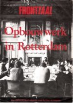
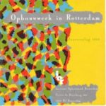
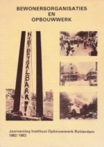
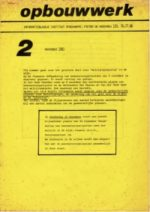
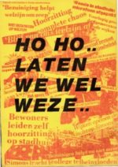
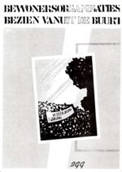
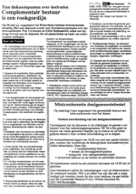

Het Instituut Opbouwwerk Rotterdam IOR wordt in 1979 losgemaakt van de gemeente, de stichting krijgt een bestuur met vertegenwoordigers van bewonersorganisaties. Het opbouwwerk wordt ‘instrument van bewoners’.
Binnen de gemeente bestaan verschillende visies op opbouwwerk. Wethouder van der Ploeg (stadsvernieuwing) bepleit het recht op zelf gekozen ondersteuners voor bewonersgroepen, wethouder Simons (welzijn) vraagt zich af of opbouwwerk in de toekomst nog nodig is nu politiek en instellingen beter weten in te spelen op de wensen uit de bevolking en democratiseren.
In de oude wijken fungeren projectgroepen stadsvernieuwing met directe invloed van georganiseerde bewoners op de aanpak van woningverbetering, in de buitenwijken worden wijkraden en deelgemeenten ingevoerd. Afspraak is dat deelgemeenten zich niet bemoeien met stadsvernieuwing binnen hun gebied.
Het draagvlak voor een deelraad in de Agniesebuurt blijkt klein, de gemeente besluit de buurt los te maken van de nieuwe wijkraad Centrum Noord.
Bewonersorganisaties leveren ‘een onmisbare bijdrage aan de gemeentelijke democratie’ stelt de gemeente in 1984, tien jaar na de vorming van de projectgroepen stadsvernieuwing. Ook na de stadsvernieuwing blijven deze organisaties recht houden zelf gekozen ondersteuning. Opbouwwerk is geen tijdelijke voorziening, maar ‘een blijvende beroepsmatige ondersteuning van bewonersorganisaties’.
Opbouwwerkers stimuleren ‘zelforganisatie door belangenbehartiging’. Het opbouwwerk wordt in de jaren 70 en 80 schakel tussen de ‘leefwereld’ van bewoners en de ‘systeemwereld’ van gemeentelijke diensten en stadsbestuur.
De beschrijving van de ontwikkelingen op deze website krijgt vanaf 1980, de start van het IOR als zelfstandige opbouwwerkinstelling, meer het karakter van een ooggetuigenverslag. De redacteur van deze site wordt in dat jaar coördinator van het toenmalige IOR.
Anne van Veenen
Juni 2019
Overzicht
- Gemeenteraadslid Hans Simons vraagt zich af of opbouwwerk niet in gemeentedienst gedaan kan worden, ‘gewoon ambtenaren die goed in hun wijk rondkijken’. Wethouder van der Ploeg stelt dat een afzonderlijk instituut meer garanties geeft voor onafhankelijkheid. (1)
- Het opbouwwerk in Rotterdam stimuleert de organisatie van bewoners in wijkorganisaties, die tegenspel bieden aan de gemeente. Een opbouwwerker is een regelneef, een duizendpoot en ook een bindend element tussen mensen. (2)
- Naast woningverbetering worden ook wijkvoorzieningen inzet van bewonersacties, met protesten tegen de bezuinigingen. (3).
- In reactie op de ekonomische krisis en werkloosheid in de jaren 80 zetten opbouwwerkers klussendiensten, sleutelwerkplaatsen en vervoersdiensten op. Een van de initiatieven is de Croosboot. (4).
- Binnen de projectgroepen stadsvernieuwing hebben georganiseerde bewoners directe invloed op het beleid van de gemeente. Bewonersorganisaties leveren een onmisbare bijdrage aan de gemeentelijke democratie, stelt de gemeente in 1984. Opbouwwerk is geen tijdelijke voorziening, maar heeft een blijvende rol in de organisatie van bewoners, ook als de stadsvernieuwing is afgerond. (5).
1. Debat: opbouwwerk in Rotterdam, waarom en waartoe
In 1979 besluit de gemeenteraad tot ‘verzelfstandiging’ van het opbouwwerk. Het IOR wordt losgemaakt van de gemeentelijke organisatie, opbouwwerkers treden in dienst van een particuliere stichting met een bestuur dat in meerderheid bestaat uit vertegenwoordigers van bewonersorganisaties.
FRONTTAAL, blad van de gemeente Rotterdam over leven en welzijn, organiseert naar aanleiding hiervan in maart 1981 een rondetafelgesprek van politici, bewoners en opbouwwerkers over Opbouwwerk in Rotterdam, het hoe en waarom. (Opbouwwerk in Rotterdam, FRONTTAAL 1981)
Gijs van Wijk, bestuurslid van het wijkorgaan Crooswijk en lid van het aktiekomitee Behoud Opbouwwerk verduidelijkt het belang van een onafhankelijke positie van het opbouwwerk: ‘De onafhankelijkheid van de opbouwerkers zit er in dat de bewonersorganisatie tegen de opbouwwerker kan zeggen, wij bepalen waar jij aan gaat werken.’ Opbouwwerkers zijn nodig om op te komen voor de belangen van bewoners, zegt van Wijk: ‘Met name de oude wijken hebben gezegd: we willen geen gekozen wijkraden, we willen gewoon dat de bewoners hun belangen wat losser en wat vrijer kunnen organiseren en er uiting aan kunnen geven zoals ze zelf willen en actie voeren. Het is heel belangrijk om te kijken wat voor strategie je wilt opzetten, welke belangen je wilt realiseren, wat de mogelijkheden zijn. In dat spel heb je opbouwwerkers nodig. Daar hebben bewonersorganisaties behoefte aan.’
De nieuw aangetreden coördinator van het IOR, Anne van Veenen, ziet het opbouwwerk als ondersteuning voor de bewonersorganisaties die ontstonden in de strijd tegen de kaalslag van oude wijken. Een opbouwwerker helpt bij het organiseren van bewoners in belangenorganisaties. Bewoners keerden zich daarbij ook tegen wijkraden en eisten directe invloed. Hij vergelijkt een opbouwwerker met een vakbondsbestuurder.
Hans Simons, coming man in de PvdA-fractie, lid van de Harmonisatieraad die de minister adviseert over het welzijnsbeleid, meent dat het opbouwwerk een duidelijke keuze heeft gedaan ‘anti een bestuurlijk decentralisatiemodel in de stad’ door te kiezen voor het versterken van sociale democratie. ‘Die opvatting mogen ze best hebben, maar het is de vraag of dan de noodzakelijke beleidsneutraliteit door het opbouwwerk in acht wordt genomen. Jullie zijn waarde-gebonden bezig.’
Johan Henderson, PvdA raadslid en oud opbouwwerker in Crooswijk, indiener van de motie tot verzelfstandiging van het opbouwwerk, brengt de discussie terug naar het recht van bewonersgroepen op onafhankelijke ondersteuning: ‘Bewonersorganisaties kunnen als steunfunctie een jurist vragen bij voorbeeld. Maar je kunt ook een procesdeskundige inhuren die wat weet van strategieën, enzovoorts. Dat is een politiek aanvaard principe.’ Hij ziet vaak bewoners naar voren komen ‘die goed kunnen lullen’, opbouwwerkers moeten ook mensen betrekken die dat niet zo goed kunnen.
Wethouder Van der Ploeg geeft zijn visie op opbouwwerk. ‘Opbouwwerk is het bij bewonersgroepen bewust maken van behoeften die er op allerlei gebied zijn – dus niet alleen volkshuisvesting -, maar ook het onderzoeken van de mogelijkheden die er zijn om die behoeften te bevredigen. (…) Het gaat om de analyse van realiseerbare behoeften en de bevrediging van die behoeften. Dat moet tegen elkaar worden afgezet en als dat is geschied, dan is het opbouwwerk intermediair bij de actie die gevoerd wordt om de behoeften bevredigd te krijgen.’
Van der Ploeg voegt daaraan toe dat het daarbij dus niet gaat om ‘het bedenken van wat mensen eigenlijk zouden willen behoeven’ en waarschuwt voor nieuwe vormen van paternalisme waarbij opbouwwerkers ‘hun eigen gelovigheden’ tot gelding willen brengen. ‘Ik zit hier donderdags, tijdens de vergaderingen van de stuurgroep stadsvernieuwing, te wachten op informatie wat er nou in een wijk op een bepaalde termijn moet gebeuren en dan koop ik er niks voor dat de opbouwwerker vindt dat onze samenleving bevrijd moet worden van multinationals of wat dan ook. (…) Hij zal een samenvatter moeten zijn van wat er bewust en onbewust leeft bij de mensen. En daarbij speelt onbehagen over de maatschappelijke structuur natuurlijk ook een rol. Maar ik moet er wel bij zeggen dat heel veel opbouwwerkers in de stadsvernieuwingsgebieden een meer en meer praktische gezindheid vertonen.’
Hans Simons vraagt zich af of er in de toekomst nog behoefte is aan opbouwwerk als een aparte discipline en werksoort. ‘Het ontstaan van het opbouwwerk heeft te maken met het onvermogen van de politiek en het ambtelijk bestel om op reële wijze er achter te komen wat er onder de bevolking leeft, respectievelijk om daar op een zinvolle wijze op in te spelen.’ Winstpunt is dat het opbouwwerk het primaat van het verzuilde particulier initiatief enigszins heeft doorbroken. ‘Maar we moeten de moed hebben om te evalueren of de functies van het opbouwwerk nog steeds gelden. Je ziet dat de overheid, inclusief de politieke partijen, de laatste tijd aan grote veranderingen onderhevig is. Ik hoef maar te wijzen op stadsvernieuwing, ontwikkeling van welzijnsbeleid, talloze vormen van interne en externe democratisering. Daarnaast zie je veranderingen bij het particulier initiatief waar steeds meer opbouwwerkachtige elementen in de doelstellingen staan.’
Hij vindt het ‘een overtrokken gedachte’ dat er een professionalisering nodig is om bewoners rond een bepaald belang te organiseren en legt van der Ploeg de vraag voor of opbouwwerk niet in gemeentedienst vervuld kan worden. ‘Gewoon praktisch, nuttig, zonder duidelijke ideologie, gewoon ambtenaren die heel goed in hun wijk rondkijken. Heb je daar een apart instituut voor nodig?’ Van der Ploeg: ‘Van mij mag iedere ambtenaar zeggen wat hij zelf vindt, maar ik weet dat daarover nogal wat angstigheid bestaat. Ik kan me voorstellen dat een afzonderlijk instituut meer garanties zal geven voor onafhankelijkheid.’ Van der Ploeg ziet de opbouwwerker als een zelfstandige beroepskracht die behoeften die leven weet te formuleren en op het bordje van de politieke partijen legt. ‘Dat politieke partijen ooit zo springlevend zouden worden dat de opbouwwerkfunctie overbodig is zie ik voorlopig nog niet gebeuren.’
Henderson ziet ook de veranderingen in de gezondheidszorg en het onderwijs waarnaar Simons verwijst. ‘De overheid moet instrumenten in het leven roepen om die veranderingsprocessen te begeleiden en te stimuleren. En als zodanig heeft het opbouwwerk een functie.’
Frans Jozef van der Heiden, lid van de Rijnmondraad voor het CDA en bestuurder van diverse katholieke welzijnsorganisaties, denkt dat er helemaal geen gat in de politiek is. ‘Ik denk dat er een gat is in de maatschappij, die ontkerstend is, die onzeker is geworden, die zijn geloof in waarden heeft verloren. En toen zijn er mensen gekomen die de oude functie van pastor op zich hebben genomen. De waarde van een opbouwwerker is iemand die een brief kan schrijven naar de gemeente.’ Hij pleit voor concrete, gespecialiseerde ondersteuning aan bewonersgroepen.
Van der Heiden voegt daaraan toe dat de opbouwwerkers de afgelopen periode geluk gehad hebben. ‘De gemeenschappelijke vijand was een slecht functionerende overheid. Daar kon je tegenaan, en de bevolking, je opdrachtgever steunde dat. Nu zijn we natuurlijk een volle stap verder, de onderlinge concurrentie breekt uit. Want de doelstellingen in de wijk liggen niet meer overal het zelfde.’
Een voorbeeld is het verschil in opstelling tussen bewonersorganisatie over het spreidingsbeleid van migranten. Het wijkorgaan Crooswijk stelt de eis van een maximum aantal buitenlanders van 16% van de wijkbevolking, de Aktiegroep het Oude Westen keert zich tegen zo’n maximumpercentage.
Simons vindt het ‘merkwaardig’ dat opbouwwerkers zo verschillende posities kunnen innemen. ‘Er is een stedelijke organisatie die uit bevolkingsgroepen bestaat, maar die op uitvoerend vlak volstrekt tegenstrijdige standpunten inneemt.’
Dries Willems, opbouwwerker in Crooswijk reageert: ‘De eisen zijn niet volstrekt tegenstrijdig, dat is jouw interpretatie. (..) Een eis van een maximum van 16% is een heel andere eis dan: we moeten geen buitenlanders in de wijk, ze moeten allemaal oprotten.’
Willems schetst de constructie waarbinnen opbouwwerkers in Rotterdam werken. De bewonersorganisaties zijn opdrachtgever, opbouwwerkers zullen dus met de bewonersorganisatie tot overeenstemming zien te komen en dat kan er toe leiden dat opbouwwerkers verschillende keuzen maken. Het Instituut Opbouwwerk Rotterdam is de werkgever van de opbouwwerker en moet garanderen dat opbouwwerk mogelijk is. ‘Ik ben blij dat die constructie zo is. Dat dus de bewonersorganisatie mijn feitelijke opdrachtgever is, maar dat op het moment dat die organisatie onmogelijke dingen van mij gaat vragen, ik terug kan gaan naar mijn werkgever en kan zeggen, het spijt me, dit kan ik niet doen.’
De FRONTTAAL-discussie maakt duidelijk dat er grote verschillen van opvatting bestaan over ‘het hoe en waarom’ van het opbouwwerk in Rotterdam.
Simons vraagt zich af of opbouwwerk niet overbodig is geworden nu overheid en politieke partijen beter weten in te spelen op wat er leeft onder de bevolking. Simons maakt deel uit van de Harmonisatieraad die adviseert over de ‘harmonisatie’ van het verzuilde welzijnsveld langs lijnen van ‘zorg’, ‘educatie’ en ‘recreatie’. Opbouwwerk zal onder educatie worden gerangschikt, als een vorm van sociaal-cultureel werk dat vooral gericht is op ontplooiing van mensen, niet op verandering van de situatie waarin zij verkeren.
Simons streeft naar ‘het doorbreken van het primaat van het verzuilde particulier initiatief’ binnen het groeiende welzijns-domein. Als wethouder zal Simons in de jaren 80 streven naar democratisering van het welzijnsbeleid via ‘wijkwelzijnsplanning’, met ‘het primaat van de politiek’.
Van der Ploeg betwijfelt of politieke partijen de functie van opbouwwerk kunnen overnemen bij het formuleren van behoeften die onder de bevolking leven. Een opbouwwerker is een ‘samenvatter’ van wat er bewust en onbewust leeft bij mensen, hij ondersteunt bewoners bij het realiseren van die behoeften en treedt op als intermediair.
Van der Ploeg grijpt in 1981 met zijn typering van opbouwwerk terug op de doelen van ‘sociale wijkopbouw’ zoals hij die in de jaren 60 als directeur van de Sociale Academie formuleerde. Doelstelling toen was ‘het opbouwen van relaties tussen integratiekaders, gericht op het dragen van gezamenlijke verantwoordelijkheid’. De gezamenlijke verantwoordelijkheid wordt in de jaren 70 ‘een coalitie’ van bewonersorganisaties en gemeente. Bewoners komen op voor hun belangen via akties en onderhandeling, met steun van ‘zelf gekozen deskundigen’. Het is een versterking van de democratie, waarbij directe en politieke democratie elkaar aanvullen.
2. Instrument van de bevolking
‘Door regelgeving met betrekking tot het opbouwwerk is duidelijkheid geschapen over de taak van deze werksoort’, zegt de staatssecretaris van CRM, mevr. J.G. Kraayeveld-Wouters bij de begrotingsbehandeling in 1981: ‘Opbouwwerk is een instrument van de bevolking, het werkt probleemgericht en bevordert zelforganisatie’.
Opbouwwerk wordt een lokale voorziening, onder verantwoordelijkheid van gemeenten. Bij de economische crisis van de jaren 80 kondigt minister Brinkman grote bezuinigingen aan op welzijnsvoorzieningen, hij bepleit een ‘zorgzame samenleving’.
Dr. G. Hendriks, Directeur-Generaal Maatschappelijke Ontwikkeling van het ministerie van CRM, schetst in 1982 in Opbouwwerk in de jaren tachtig de achtergrond van het nieuw geformuleerde opbouwwerk-beleid. Hendriks was in de jaren 60 een van de grondleggers van het opbouwwerk in Nederland.noot
Hendriks beaamt dat de verzorgingsstaat ‘terug moet naar de mensen’. Overheid en beroepskrachten moeten ‘meer respect hebben voor de eigen initiatieven van burgers’ en voor ‘spontane opbouwprocessen’. Maar Hendriks wijst er ook op dat er burgers zijn die niet in staat zijn zich te organiseren en de problemen die ze ervaren ‘om te buigen tot oplossingen’. ‘Te vaak wordt aan deze groep medeburgers een of andere vorm van persoonlijk falen toegeschreven, terwijl de belemmeringen vooral voortkomen uit de situatie waarin zij leven en de wijze waarop onze samenleving funktioneert’.
In deze situaties is opbouwwerk nodig, als ‘instrument van de bevolking’. Het versterkt de positie van de betrokkenen door het ondersteunen van diverse vormen van zelforganisatie, door het vormen van koalities met medestanders, en het aangeven van beschikbare hulpbronnen. Dit gaat samen met het vergroten van het eigen inzicht in de problematiek en het komen tot oplossingsmogelijkheden.
Hendriks bepleit zeggenschap van bewoners over opbouwwerk door deelname in opbouwwerkorganisaties en ‘door het kontrakt dat groepen burgers met de toegevoegde opbouwwerker sluiten’.
De analyse van Hendriks sluit aan bij de ontwikkeling van het opbouwwerk in Rotterdam. Het Jaarverslag 1980 van het IOR geeft daarvan een beeld. (Instituut Opbouwwerk Rotterdam, Jaarverslag 1980)
Het opbouwwerk werkt ‘probleemgericht’: in 1980 werken 18 van de 25 Rotterdamse opbouwwerkers in stadsvernieuwingswijken.
Ze zijn een ‘instrument van de bevolking’: bewoners zijn opdrachtgever van de opbouwwerker met een ‘verantwoordingskader’ binnen de bewonersorganisatie dat het takenpakket vaststelt.
Het opbouwwerk ‘bevordert zelforganisatie’.
Deze ’zelforganisatie’ heeft in Rotterdam een eigensoortige vorm gekregen. De organisatie van bewoners in wijkorganisaties is feitelijk een coproductie van actieve bewoners, opbouwwerkers en gemeente. Dat geldt voor de sociaal wijkopbouworganen van eind jaren 60 en ook voor de bewonersorganisaties van de jaren 70. Deze wijkgerichte organisaties zijn een mix van bewonersinitiatief en overheidsinterventie, van bottom-up en top-down.
Bewonersorganisaties en de coalitie van georganiseerde bewoners en gemeente maakten stadsvernieuwing en het bouwen voor de buurt mogelijk.
Een groep opbouwwerkers maakt in 1982 een excursie naar Berlijn. Ze bivakkeren op de zolder van een gekraakt woongebouw aan een achter-hof in Kreuzberg. In de wijk vindt de manifestatie TU WAS! plaats, met betogingen tegen ontruimingen en discussies over woonrecht voor allen. In Amsterdam staan krakers en politie tegenover elkaar bij de ontruiming van de Grote Keizer. De Rotterdamse opbouwwerkers discussiëren in Berlijn over kraken en ‘direkte aktie’, betogers in Kreuzberg marcheren in looppas arm-in-arm richting het Oude Raadhuis dat afgezet is door de ME. Te midden van het tumult komen de opbouwwerkers tot de conclusie dat de Rotterdamse stadsvernieuwing meer resultaten oplevert voor de verbetering van de woonsituatie van bewoners dan de kraakbeweging. Bewonersorganisaties gaan ook leegstand in stadsvernieuwingswijken tegen met afspraken over tijdelijke bewoning. Dat gaat niet zonder conflicten, maar politie-inzet bij ontruiming is zelden nodig.
Hendriks werpt in zijn inleiding van 1982 ook de vraag op: is het welzijnswerk zoals dat tot nu toe gegroeid is, wel het welzijnswerk waaraan echt behoefte bestaat? Er woedt begin jaren 80 een levendige discussie over betutteling en het afhankelijk maken van bewoners, cliënten en patiënten door welzijnswerkers. De opbouwwerker is daarbij als in het oog lopende welzijnswerker vaak mikpunt. Een oproep van Gerrit Komrij uit een column in de Volkskrant siert de omslag van het Jaarverslag van het IOR : ‘moeder, moeder doe de deur op slot, want de opbouwwerkers komen er aan’.
Ook burgemeester André van der Louw voegt zich in 1981 bij dit koor. Bij zijn vertrek naar Den Haag om minister te worden van CRM zegt hij: ‘Ik heb ook de mensen in de wijken gehoord die tegen me zeiden: haal asjeblieft die vent weg die ons elke dag komt vertellen hoe ongelukkig we wel niet zijn. We moeten overal actie voor voeren en ’s avonds vertrekt meneer met zijn gammele eendje naar zijn verbouwde boerderijtje. We willen alleen maar een klein speeltuintje voor de kinderen en we zijn mans genoeg om daar zelf voor te knokken.’ noot
Opbouwwerker Dries Willems maakt zich boos en noemt de uitspraken van de burgemeester ‘populistisch’. ‘Bewoners waarmee ik in Crooswijk heb gewerkt pikken dit soort uitspraken niet want het is het versimpelen van de werkelijkheid, het maken van een karikatuur van het opbouwwerk. Deze bewoners hebben het opbouwwerk nu juist wel in de vingers gekregen en weten er op een prima manier gebruik van te maken.’ noot
Willems schetst een profiel van een opbouwwerker in een stadsvernieuwingswijk die werkt in opdracht van bewoners:
‘Ik durf rustig te stellen dat ik in de Rotterdamse verpauperde wijk Crooswijk onder en ten dienste van bewonersorganisaties gewerkt heb en dat geldt voor veel Rotterdamse opbouwwerkers. En dat wil niet zeggen dat ik een loopjongen ben geweest, die maar uitvoerde wat me opgedragen werd. Ik heb zeker een eigen inbreng gehad, maar om die inbreng werd ook gevraagd. Bewoners zitten in zo’n verpauperde wijk als Crooswijk zo boven op alle ellende, dat ze iemand nodig hebben die orde op zaken stelt, die hoofd- en bijzaken uit elkaar weet te houden, die ervoor zorgt dat niet alles tegelijk aangepakt wordt of iedereen door elkaar zit te kwekken, die ervoor zorgt dat de ene groep bewoners niet zit te beslissen over de andere groep, dat niet één kluppie de dienst uitmaakt in de wijk, die ervoor zorgt dat nieuwelingen aan bod komen en die ook richting kan geven aan waar het met de bewonersorganisatie heen moet. Voor dat soort dingen is er nu precies een opbouwwerker. Een opbouwwerker is een regelneef, een duizendpoot, maar daarnaast een bindend elementen tussen mensen.’
Een opbouwwerker moet van alle markten thuis zijn, Willems somt op wat er in Crooswijk van hem verwacht wordt:
‘Een opbouwwerker moet goede informatie kunnen geven, afschuwelijke ambtelijke nota’s kunnen lezen en die omzetten in gewone Hollandse taal, een brief kunnen schrijven, de post bijhouden, een bus charteren als we weer eens met z’n allen naar het stadhuis moeten, mensen helpen die huurschulden hebben of niet weten of ze wel of niet aan de renovatie mee zullen doen, akties op poten zetten als het om woonlasten in de nieuwbouw of de huren in de renovatie gaat en natuurlijk het bekende speeltuintje of de verkeerslichten op de hoek. Hij moet een vrijwilligersklub op kunnen zetten, een bewonersgroep een beetje enthousiast kunnen begeleiden, met lastige jongeren om kunnen gaan, om ze het gebouw uit te sodemieteren of een pandje voor ze te ritselen bij de gemeente. Hij moet met andere welzijnswerkers om kunnen gaan, konflikten of meningsverschillen tussen werkers of instellingen op tafel krijgen en aan bewoners voorleggen. Hij moet zelfs als het nodig is jongerenwerkers begeleiden of een jongerencentrum op poten zetten. En dat alles onder de strikte voorwaarde, dat bewoners weten waarmee hij bezig is en dat doet in opdracht van of samen met hen.’
Tot zover het verslag uit de wijk van een getergde opbouwwerker. De coalitie van bewonersorganisaties en gemeente is een verbazingwekkende coproductie die gepaard gaat met veel emoties. Aan een wand bij het IOR hangt een knipsel met de kop ‘Dat was weer aangrijpend gisteravond’.
Uit de werkverslagen over de ontwikkeling van het ‘georganiseerd bewonersinitiatief’ blijkt dat veel werk aan de winkel is voor opbouwwerkers. De wijkorganisaties zijn ‘een min of meer gestruktureerd koördinatiepunt van uiteenlopende en betrekkelijk zelfstandige initiatieven en akties van groepen bewoners; uit deze akties komt een aantal mensen naar voren dat direkt betrokken is bij de lopende zaken van de centrale bewonersorganisatie’. (Instituut Opbouwwerk Rotterdam, Jaarverslag 1982/83)
Opbouwwerkers zijn vaak ‘coördinerend beroepskracht’, ze hebben een begeleidende rol naar de bewonersvertegenwoordigers in de projektgroep stadsvernieuwing en zijn schakel naar het team van bewonersondersteuners.
De agenda van bestuursvergaderingen van het IOR wordt in het begin bepaald door adhesieverzoeken uit wijken voor akties en petities over strijdpunten. Is de bestuursvergadering van het IOR de plek om in discussie te gaan over woonlasten en bezuinigen?
Er komt een taakverdeling tot stand. Het IOR gaat over het opbouwwerk, niet over meningsvorming en aktie rond de verdeling van stadsvernieuwingsbudgetten, de woonlasten of de bezuinigingen.
Het Rotterdams Overleg Bewonersorganisaties ROB wordt het platform van bewonersorganisaties voor stadsvernieuwing. Het is ook stedelijk uitwisselingspunt van bewonersondersteuners, die geen eigen stedelijk professioneel verband hebben.
Het ROB is een voortzetting eerdere stedelijke samenwerkingsverbanden, het OSOW uit de beginperiode van de stadsvernieuwing en het Samenwerkingsverband Oude Wijken dat begin jaren 70 werd gevormd.
Het IOR maakt een formatieplaats vrij voor ondersteuning van het ROB, opdrachtgever van deze ‘stedelijk ondersteuner’ is niet het IOR maar een kerngroep van bewoners uit de samenwerkende bewonersorganisaties. Bij haar optreden en akties moet het ROB zich te legitimeren door steun van bewonersorganisaties. Meningsverschillen over de koers worden uitgevochten binnen het ROB, het IOR blijft daar buiten.
Bij de verhuizing naar een nieuw pand aan de Mathenesserlaan krijgt het ROB de beschikking over de benedenverdieping, het IOR betrekt de bovenverdieping.
Medewerkers van het stedelijk bureau hebben een begeleidende functie naar opbouwwerkers, de ‘medewerker coördinatie’ fungeert als meewerkend voorman. Verharding van verhoudingen in wijken en de toename van tegenstellingen tussen groepen in de jaren 80 vragen om de verduidelijking van posities van instellingen en professionals. ‘De horizontale organisatiestructuur uit de jaren 70 van instellingen staat het vermogen tot het stellen van regels in de weg’, luidt een van de conclusies van de discussies over ontheemding en confrontaties in wijken (Zie deel 3, veranderende bevolking).
Voor het IOR is dit aanleiding om, met behulp van organisatiebureau Obelon, meer lijn te brengen in de organisatie. Werkbegeleiders worden leidinggevenden van de opbouwwerkers van hun team, de coördinatie-functie verandert in een directie-functie. De teamleiders krijgt ook consulenttaken, gericht op het goed functioneren van de teams van opbouwwerkers en bewonersondersteuners in de wijken. De medezeggenschap van bewoners over het werk van opbouwwerkers blijft onaangetast.
Naast personeelszaken en werkbegeleiding stelt het IOR zich ten doel ‘na te denken over waarmee we bezig zijn’. De instelling richt zich op meningsvorming en werkontwikkeling op nieuwe werkterreinen: migrantenopbouwwerk, werkloosheid, samenlevingsopbouw bij wijkbeheer na de stadsvernieuwing.
3. Wijkwelzijnsplanning
Wethouder Simons wil een betere afstemming van welzijnsactiviteiten in de wijk, een herverdeling van middelen naar achterstands-scores en een grotere invloed van gebruikers. De gemeente heeft grote verwachtingen van het nieuwe welzijnsbeleid. ’Gelukkig hebben we in Rotterdam nu het systeem van de wijkwelzijnsplanning’, zegt burgemeester van der Louw in zijn omstreden interview, ‘kunnen de bewoners zelf hun omgeving invullen.’
In Crooswijk bestaat al langer samenwerking tussen wijkorgaan en club- en buurthuizen, in Delfshaven worden plannen gemaakt voor een meer naar buiten gerichte opstelling van buurthuizen en opvang van jongeren zonder werk. Het is een aanzet voor een wijkwelzijnsplan. Een werkgroep van bewonersorganisaties bekijkt hoe kan worden ingespeeld op het gemeentelijke beleid. (Bewonersorganisaties vergaderen over welzijnsplanning, IOR nov. 1981)
Er ontstaat kortsluiting. Bewonersorganisatie Delfshaven meldt dat het niet uit de voeten kan met de werkwijze van de gemeente. ‘Een wijkwelzijnsplan diende exact aan te geven welk werk onder ‘zorg’, ‘educatie’, ‘dienstverlening’ werd verricht. Bij alle werk moesten aantallen deelnemers worden vermeld, hoeveel Marokkanen, Turken, bejaarden en peuters. Al met al een werkwijze die niet aansloot bij de werkwijze van het wijkorgaan.’ Bewonersorganisatie besluiten geen verantwoordelijkheid te nemen voor deze wijkwelzijnsplanning en laten de inventarisatie over aan ambtelijke wijkwelzijns-coördinatoren. Ze willen zich beperken tot het opstellen van een programma van eisen.
Na de aankondiging van grote bezuinigingen van zo’n 10% op welzijn organiseert het komitee ‘Laten We Wel Weze’ demonstratieve bijeenkomsten. De bezuinigingen betekenen de sluiting van een reeks buurthuizen. De Burgerzaal van het stadhuis puilt uit bij hoorzittingen over de plannen. ‘WeWePe, weg er mee!’, luidt de leus. Het verzet uit de wijken tegen de bezuinigingen is veel groter dan verwacht op het stadhuis. De voorgenomen bezuiniging wordt gehalveerd. (HO HO LATEN WE WEL WEZE, knipselkrant 1982)
Wethouder Simons komt met het voorstel om alle uitvoerend welzijnswerk per wijk onder te brengen in één organisatie, met een bestuur van personen uit de wijk, o.a. uit bewonersorganisaties. Doel van het voorstel is ‘dat het beleid voor het welzijnswerk op wijkniveau wordt bepaald en dat bewoners en gebruikers op dat beleid grotere invloed kunnen uitoefenen. De wijkgebonden welzijnsorganisatie moet democratisch, overzichtelijk en controleerbaar zijn voor alle belanghebbenden.’
Bewonersorganisaties wijzen het voorstel om in het bestuur te gaan zitten van een wijkwelzijnsinstelling af, ze willen geen bestuurlijke bevoegdheden. Bewonersorganisaties zijn geen wijkbestuur en willen dat ook niet worden. ‘Dit standpunt wordt sinds jaar en dag ingenomen door bewonersorganisaties maar schijnt toch moeilijk door te dringen op het stadhuis’, aldus het IOR in een reactie. ‘Er is geen maatschappelijke basis voor bestuurlijke functies van een bewonersorganisatie of voor vormen van zelfbestuur. De omvang van de problemen en de maatschappelijke tegenstellingen zijn dusdanig dat een bewonersorganisatie alleen kan funktioneren als onafhankelijke belangenorganisatie die bewonersbelangen neerlegt op de plek waar daar politiek iets aan gedaan kan worden, het gemeentebestuur. Alleen onder die voorwaarde zijn afspraken mogelijk met bewonersorganisaties over de aanpak van problemen.’
Het IOR bevestigt hiermee de uitgangspunten van georganiseerde belangenbehartiging van bewoners die vanaf het begin van de stadsvernieuwing in 1974 worden gehanteerd.
4. Opbouwwerk, bewonersorganisatie en gemeentelijke democratie
In oude wijken functioneren projectgroepen stadsvernieuwing, terwijl in de rest van de stad deelraden worden opgezet. In ‘het Charloise model’, nagevolgd in Kralingen, wordt afgesproken dat de deelgemeente zich niet bemoeit met stadsvernieuwingsprojecten, inspraak van bewoners loopt via bewonersorganisaties.
Opbouwwerkers willen voorkomen dat tegenstellingen over het deelraadssysteem uitgevochten worden over de hoofden van bewoners en streven naar een verzakelijking van de verhoudingen.
Bij verkiezingen in 1982 voor een nieuwe wijkraad/deelgemeente Centrum Noord is de opkomst in de Agniesebuurt laag (25%). Buurtgroepen en club- en buurthuizen in Agniesebuurt, Provenierswijk en Liskwartier zijn fel gekant zijn tegen deelgemeenten, deze organen staan directe invloed op stadsvernieuwing in hun buurten in de weg.
De gemeenteraad besluit een onderzoek te laten instellen door een onafhankelijk onderzoekbureau naar het draagvlak voor de deelgemeente. Belangrijkste uitkomst is dat in achterstandswijken geen vertrouwen bestaat dat de politiek veel kan bijdragen aan het oplossen van de problemen die men ervaart. De gemeenteraad besluit om de Agniesebuurt los te maken uit het nieuwe deelraadsgebied Centrum Noord.
Onderzoekbureau IGG doet in 1984 in opdracht van het IOR een vervolgonderzoek, naar de steun voor bewonersorganisaties. Een steekproef van de bevolking in drie stadsdelen levert het volgende beeld op. Bewonersorganisaties doen het meest aan het oplossen van problemen in de wijk, vindt 17% van de bevolking, de gemeente en deelgemeente scoren resp. 13% en 6%. Overigens, ‘niemand’ en ‘weet niet’ zijn de grootste partij met 25% en 28%. Als de twee grootste problemen in de wijk worden genoemd ‘woonomstandigheden’ en ‘buitenlanders’. (Bewonersorganisaties bezien vanuit de buurt, onderzoekbureau IGG, Rotterdam 1984)
Commentaar van het IOR: ‘Op het vlak van woonomstandigheden hebben bewonersorganisatie een staat van dienst. T.a.v. ‘de buitenlanders’ zal er de komende jaren een harde strijd gevochten moeten worden met als inzet de erkenning van de rechten van immigranten. (…). Bewonersorganisaties kunnen de strijd op dit front niet alleen aan. Het vereist een brede samenwerking met instellingen in de wijk en konkrete ondersteuning vanuit het gemeentebestuur.’ (Jaarverslag IOR 1982/83)
Het verslag vervolgt: ‘De funktie die bewonersorganisaties vervullen is voor een groot deel gebaseerd op een praktische koalitie-politiek met delen van de politiek en het ambtelijk apparaat. Daardoor zijn resultaten te boeken. (…) Massawerkloosheid, inkomensdaling en bezuinigingen in de kollektieve sektor zetten het ‘bouwen voor de buurt’ op losse schroeven. (…) Belangen veranderen en worden verbrokkelder.’
Voor het IOR leidt dit tot de vraag: ‘Kan een wijkgerichte bewonersorganisatie onder dergelijke omstandigheden bestaan?’
De opbouwwerkinstelling ziet een ontwikkeling van bewonersorganisaties naar een los gecoördineerd netwerk van verschillende groepen, die gebruik maken van de buurtwinkel en de opbouwwerkondersteuning. Naast wonen worden activiteiten ondernomen op andere terreinen, rond wijkbeheer, veiligheid en het samen-wonen-samen-leven van verschillende groepen bewoners.
Gesignaleerd wordt dat opbouwwerkers in oude wijken waar kerken en politieke partijen vaak zijn verdwenen, deel uitmaken van het sociale kader. De opvatting over opbouwwerk als een tijdelijke voorziening met projectmatige inzet die erop gericht is zichzelf overbodig te maken is in deze situatie achterhaald. Naast de organisatie van belangenbehartiging blijft doel van opbouwwerk de ontwikkeling van ‘de kapaciteit van doe-het-zelf’ van bewoners.
In 1984, kort na de discussie over het draagvlak van de deelgemeente Noord, komt de gemeente met een opmerkelijke nota over bewonersorganisaties en gemeentelijke democratie’ (De Rotterdamse bewonersorganisaties en hun bijdrage aan de gemeentelijke democratie, gemeente Rotterdam 1984).
Wijkorganen en bewonersorganisaties worden door het gemeentebestuur niet langer beschouwd als inspraakorganen die de wijk vertegenwoordigen, maar als belangenorganisaties. ‘Ze geven stem aan mensen die niet meer in de politiek geïnteresseerd zijn en die zich niet door politieke partijen laten mobiliseren’.
Bewonersorganisaties zijn daarmee ‘een vorm van directe democratie die een aanvulling vormt op het stelsel van parlementaire democratie’. (Bewonersorganisaties vakbonden van de Rotterdamse wijken, Rotterdams Nieuwsblad 13 sept. 1984)
De gemeente neemt afstand van eerder beleid: ‘Het zou thans een illusie zijn om een wijkorgaan te beschouwen als een breed inspraakorgaan dat alle strijdige belangen op wijkniveau aftast en tot een compromis verwerkt of als een constructie die zou kunnen gelden als voorloper en wegbereider van een door verkiezingen tot stand gebracht wijkbestuur.’
De nota is een gezamenlijk product van de secretarieafdelingen Ruimtelijke Ordening, Stadsvernieuwing en Volkshuisvesting ROSV, Wijkaangelegenheden en Algemene Bestuurszaken. Inzichten binnen de gemeente over projectgroepen stadsvernieuwing en over wijkorganen en wijkopbouwwerk komen tien jaar na het begin van de stadvernieuwing bij elkaar. Beleidsdoel voor wijkorganen en opbouwwerk is niet langer ‘het betrekken van burgers bij het bestuur’, maar ‘het bevorderen van zelforganisatie’.
De gemeente bevestigt de onafhankelijke positie van opbouwwerk en bewonersondersteuning: ‘Dit kan als consequentie hebben dat de gemeente bewust haar eigen tegenspelers financiert, om in het bijzonder die belangen die anders bij de vorming van het beleid onvoldoende tot hun recht zouden kunnen komen, voldoende in de afweging te kunnen betrekken.’ noot
Gezien de problemen in wijken waarmee deze bewonersorganisaties worden geconfronteerd en het gebrek aan kader in wijken dient ‘professionele ondersteuning, bijv. door het opbouwwerk, voor zover financieel mogelijk, gehonoreerd te worden.’ Herschikking van middelen aan andere welzijnsdoelen via wijkwelzijnsplanning wordt uitgesloten.
Gekozen wordt voor ‘privatisering’ van de bewonersondersteuning, door het onderbrengen van extern deskundigen en sociaal begeleiders in een particuliere stichting, naar het voorbeeld van het opbouwwerk.
Uitgangspunt bij de overgang van stadsvernieuwing naar wijkbeheer is dat ‘de verworvenheden van de Projectorganisatie stadsvernieuwing behouden blijven.’ Deconcentratie van het ambtelijk apparaat moet in goed overleg met bewonersorganisaties plaats vinden.
De nota onderscheidt vier modellen die de afgelopen vijftien jaar zijn voorgekomen:
- het politieke model van wijkraden met vertegenwoordigers van politieke partijen
- het inspraakmodel gericht op het betrekken van bewoners bij de besluitvorming
- de aktie- en belangengroep die ontstaat in protest tegen plannen voor kaalslag van oude wijken
- het stadsvernieuwingsmodel gericht op belangenbehartiging en overleg.
Het opbouwwerk krijgt een blijvende rol toegewezen bij de organisatie van bewoners: ‘In de loop van de tijd zijn veel wijkorganen overgegaan van het ene model op een ander. Bij deze ontwikkeling speelde ook het bestaan van het wijkopbouwwerk een rol. Dit werk waarvan aanvankelijk werd verondersteld dat het een tijdelijk karakter zou hebben (‘opbouw’ in de zin van het aanleren van groepsvorming en organisatie van bewoners) werd in de loop van de tijd een blijvende beroepsmatige ondersteuning van wijkorganen. Indien een wijkorgaan door meningsverschillen of gebrek aan kader dreigt in te storten, neemt de opbouwwerker- alleen al vanuit de behoefte aan een verantwoordingskader voor zijn of haar activiteiten- het initiatief tot een nieuwe start met (grotendeels) andere mensen en een andere structuur. Het opbouwwerk heeft derhalve zowel op de continuïteit als op de overgang van het ene naar het andere model grote invloed.’
Op het moment dat de nota verschijnt, september 1984, begint zich een vijfde model af te tekenen in de organisatie van bewoners: de bewonersorganisatie ontwikkelt zich van een centraal georganiseerde belangenorganisatie naar ‘een los gecoördineerd netwerk van verschillende groepen die gebruik maken van buurtwinkel en ondersteuning’.
Er ontstaan onafhankelijke professionele steunpunten voor bewonersinitiatieven in de wijk. Het nieuwe model heeft verschillende benamingen: ‘bewonerssteunpunt’, ‘resource-center’, ‘winkel voor al uw opbouwwerk’. Ook een klassieke term keert terug: ‘wijkopbouworgaan’.
Vanaf eind jaren 80 zal niet ‘belangenbehartiging door zelforganisatie’ centraal staan, maar ‘samenlevingsopbouw’. Opbouwwerkers gaan in de jaren 90 opereren in de rol van ‘derde’, tussen bewonersgroepen van diverse pluimage en instanties van verschillende soort. Ze initiëren campagnes, zetten straatgroepen op en stimuleren opzoomeracties.
De bevestiging dat bewonersorganisaties geen wijkbesturen zijn maar belangenorganisaties, maakt ook de weg vrij voor het invoeren van deelgemeenten in de gehele stad.
Naast decentralisatie van Rijk naar gemeenten was ook binnen de gemeente decentralisatie nodig naar deelgemeenten, zegt Peper in 2019. ‘Over deelgemeenten werd met enig dédain gesproken in Rotterdam, Jan van der Ploeg was fel tegen.’ In de jaren 80 en 90 wordt de decentralisatie opnieuw opgepakt. ‘De belasting op de Coolsingel werd te groot, het was allemaal niet goed te overzien wat er in wijken nodig was.’ Deelgemeenten krijgen via het deelgemeentefonds de beschikking over 300 miljoen. ‘De Coolsingel moest macht uit handen geven, Jan van der Ploeg was weg, we moesten de aktiegroepen doorsturen naar de deelgemeenten.’
Kenmerkend voor de ontwikkeling van het Rotterdamse opbouwwerk in de jaren 70 en 80 is de koppeling van opbouwwerk aan wijkorganisaties. Deze organisaties worden erkend en gefaciliteerd door de gemeente, actieve bewoners en opbouwwerker werken daarin samen.
Dit arrangement wordt ontwikkeld in de jaren 60 met het oprichten van sociaal wijkopbouworganen SWO’s in nieuwe wijken, als antwoord op de afbrokkeling van de verzuilde maatschappelijke structuur. Vanaf 1974 krijgt het een nieuwe inhoud met het omvormen van de aktiegroepen in oude wijken tot bewonersorganisaties die onderhandelingspartner en tegenspeler van de gemeente zijn bij het bouwen voor de buurt. In de jaren 80 wordt gepoogd om ook op het vlak welzijn en wijkbeheer soortgelijke constructies te maken voor samenspel tussen gemeente en georganiseerde bewoners. Opbouwwerkers hebben in de verschillende episodes steeds een organiserende rol en een schakelfunctie.
Hoogtijdagen van dit ‘coalitiemodel’ liggen in de periode stadsvernieuwing, met een ‘onderhandelings-democratie in werking’. De coalitie van gemeente en bewonersorganisaties is een samenspel, met spel en tegenspel, waarbij de gemeente haar eigen oppositie financiert. Opbouwwerkers ontwikkelen een ‘praktische gezindheid’, in de woorden van wethouder van der Ploeg, ze opereren resultaatgericht.
De coalitie van gemeente en bewonersorganisaties is na de koerswijziging van de PvdA in 1974, ook een ‘sociaal-democratie in werking’, met goed en betaalbaar bouwen en medezeggenschap van groepen bewoners met lage inkomens. Het programma heeft samenbindende kracht in wijken, ook naar groepen die geen binding hebben met de politiek.
Anne van Veenen
Juni 2019